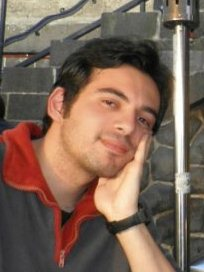
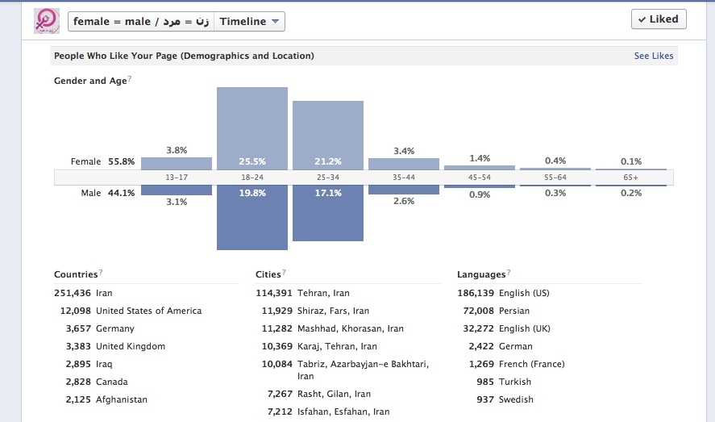

پذيرش > تریبون > گفت و گو > قدمی به بلندی پایان تبعیض/گفت و گو با محسن فرشیدی، فعال حقوق برابر


 قدمی به بلندی پایان تبعیض/گفت و گو با محسن فرشیدی، فعال حقوق برابر قدمی به بلندی پایان تبعیض/گفت و گو با محسن فرشیدی، فعال حقوق برابر
21 اسفند 1391 - - نسخه قابل چاپ
تغییر برای برابری /نیلوفر انسان - این روزها، حضور و فعالیت در راستایِ اشاعه¬ی برابراندیشی در عرصه¬ی مجازی پررنگ¬تر از همیشه، به چشم می¬خورد. صفحاتِ زیادی در شبکه¬های اجتماعیِ گوناگون، چه به صورتِ شخصی و چه به صورتِ گروهی، یافت می¬شوند که با امیدِ به تغییر، از لزومِ برابری می¬گویند. در این میان اما یکی از پرطرفدارترین صفحاتی که مخاطبانِ زیادی نیز پیدا کرده، صفحه¬ی برابریِ زن و مرد در فیس بوک است. گرداننده¬ی این صفحه، در صفحه¬ی شخصیِ خود در این باره می¬نویسد: «در صفحه برابری زن و مرد از مرز سیصدهزار نفر گذشتیم. بارها در این مدت شنیده ام که بی اثر است، فایده ندارد، ده درصد مردم هم در فیسبوک نیستند، با یک لایک که نیست، برابری واقعی هرگز بوجود نمیاد. به این مردم و سیستم امیدی نیست و صدها موارد ناامیدانه دیگر. بد و بیراه هم همیشه بوده. اما فکر میکنم همین که موضوعات متفاوت، هر چند برخی مواقع تند به جلوی چشم همان ها می آید خوب است. همینکه حضور دارند خوبه، فارغ از اینکه همیشه برای فحش دادن و خرده گرفتن باشد. یک جای ذهن ثبت میشود این دیدگاه های متفاوت، هر چند تاثیرش شاید ده ها سال بعد باشد یا نباشد... یاد گرفتم که نباید از تلاش دست کشید. قدمی کوچک هم قدمیست، یک نفر هم یک نفر است و ناامیدان بازندگان عرصه مبارزه اند.» در روزِ جهانیِ زن (8 مارس) تصمیم گرفتیم که گفت¬و¬گویی داشته باشیم با محسن فرشیدی، فعال حقوق برابر و گرداننده¬ی صفحه¬ی برابری زن و مرد، دانشجو و ساکن آلمان و با او از صفحه¬ی پرمخاطبی که اداره¬ی آن را بر عهده دارد سخن گفتیم و از لزومِ برابری و فمنیسم و حساسیت¬های جنسیتی و درد و دل¬هایِ برابری محورِ دیگر.

اول از همه فرا رسیدنِ 8 مارس را به شما به عنوانِ یک فعالِ حقوقِ برابرِ زنان و مردان تبریک می¬گویم. به همین مناسبت خوشحال می¬شوم اگر از صفحه¬ی فیس بوکیِ برابریِ زن و مرد (زن=مرد) برایمان بگویید و از بازخوردهایی که در این مدت از فعالیت در این صفحه گرفته¬اید؟
حدود چهارسال پیش و تقریبا همزمان با اتفاقات سال ۸۸ و بعد از انتخابات چالش برانگیز ریاست جمهوری در ایران و با توجه به ظرفیتهای خیلی خوبی که شبکههای اجتماعی داشتند بسیاری از وبلاگنویسان کوچ دستهجمعی به این شبکهها از جمله فیسبوک و تویتر داشتند. من هم تا قبل از آن، مطالبم را در وبلاگ شخصیام به نام برابراندیش مینوشتم و سپس با ایجاد صفحه برابری زن و مرد در فیسبوک ادامه پیدا کرد. بعد از حدود چندماه برای خود من هم غیر قابل پیش بینی بود و استقبال از این صفحه خیلی بیشتر شد تا جایی که از صرفا دست نوشته های شخصی ام، موضوع فراتر رفت و به خبررسانی و جمع آوری مطالب با موضوع برابری رسید. تا به امروز طرح هایی از جمله خاطره نویسی زنان از سه دهه پوشش اجباری - آری گفتن به برابری - یک جمله برسد به دست نسرین ستوده - سعی در مشارکت مردان به برابری - مشارکت در خیزش یک میلیاردی از جمله کارهای قابل توجه و اختصاصی صفحه بوده است. در همه ی این مدت دوستان زیادی به گروه کمک های کوتاه و بلند مدت کرده اند. مثلا ایده نوشتن خاطرات حجاب اجباری که از دوست خوبم خانم علی¬نژاد آمد، تا دوستان برابراندیشی مثل آقای نادری که بیشتر کارهای گرافیکی و طراحی را انجام میدهند و بسیاری دیگر که بی¬نام، دغدغده برابری دارند و در این مدت شخص من و از آن مهمتر صفحه را تنها نگذاشتند.
سعی کردم در ابتدا مشاهداتم از حضور پررنگ زنان در مشارکت های اعتراضی در خیابان ها را ثبت کنم. از همان روز اول، تمام سعیام بر این بود که این صفحه بتواند صدای برابری خواهی باشد، فارغ از اینکه چه تغییراتی بخواهد در حاکمیت ایجاد شود. سعی میکردم حضور زنان برجسته شود تا به مانند یک قرن تاریخ ایران معاصر در هر تغییراتی از مشروطه تا به امروز حقوق زنان و برابری خواهان این¬بار دیگر ضایع نشود.
شاید سوال کمی کلیشه¬ای باشد اما به اعتقادِ شخصِ من مهم است. هر چند که اگر دوست نداشته باشید می-توانید به این سوال جواب ندهید. به عنوانِ مردی برابری¬خواه با چه برخوردهایی در زندگیِ روزمره-چه مجازی و چه واقعی- مواجه می¬شوید؟
به شخصه با توجه به خصوصیت اخلاقی ام کمتر در جمع ها حضور دارم. اما تقریبا همیشه در برخوردهایی که وجود دارد موضوعاتی با محوریت زنان، برابری، فمینیسم هم شکل میگیرد. گاهی موضوع مورد صحبت در مورد ساده ترین مسائل روزمره است و گاهی کار به بحث های تخصصی تر در این حوزه کشیده میشود و بیشتر در میان مردان همیشه مخالفت هایی با این حرکت ها و تفکرات میشود. گاهی تند، گاهی آرام تر… همه شان را تجربه داشته ام و احساس میکنم ترسی نهفته درونشان از این موضوع وجود دارد و شاید سلطه ای به طول تاریخ که بر خانه و خانواده و اجتماع بر زنان وجود داشته را در خطر احساس میکنند. در این میان باید بگویم سعی میکنم به این موضوع بپردازم که مردان اگر بیشتر نه، کمتر از زنان از برابری سهم نمیبرند و باید به آنها گفت اگر به دنبال عشق واقعی، رابطه ی جنسی بهتر، زندگی بهتر، جامعه ای اخلاق گرا تر و هرچیزی با سطح تفکر خود هستند، این با زیر سلطه قرار دادن زنان به دست نمی آید، بلکه با قدرت مندتر شدن زنان ایجاد میشود. یکجور ترسشان از این موضوع، از ناخوداگاهشان باید محو شود. البته که به زمان خیلی زیادی برای این منظور نیاز است.

دوست دارم محورِ گفت¬و¬گومان بیشتر رویِ یک سری از کنش¬ها یا صحبت¬هایی باشد که در چند ماهِ اخیر شدت گرفته میانِ برخی از مردان و حتی زنان روشن و شاید حتی فعال در زمینه¬ی حقوق بشر. کنش¬ها یا حرف¬هایی دیده می¬شود که بسیار سنتی و مذکر-محور به نظر می¬رسند. به نظرِ خودِ من نوعی گفتمانِ به اصطلاح ضد-فمنیستی انگار در حال شکل¬گیری است. البته نه این¬که نبوده اما در این یکی دو سالِ اخیر شدتِ بیشتری گرفته. و مثلا در مقابلِ یک سری انتقادها که به برخی از سویه¬هایِ جنسیتیِ فرهنگِ روزمره وارد می¬شود، اغلب با جملات و هجمه¬هایی مواجه می¬شویم که با اِی بابا شما فمنیست¬ها هم که ... شروع می¬شود. فکر می¬کنید چرا این¬طور است؟ چون خودِ شما هم در فضایِ مجازی در به چالش کشیدنِ چنین افکاری سهیم هستید دوست دارم نظرتان را بدانم. چه اتفاقی افتاده است یا دارد می¬افتد؟
برابری خواهان همیشه در چند جبهه مبارزه کرده اند. اول در مقابل خود حاکمیت های مردسالار و قانون گذارانشان که جای تعحب ندارد. اما مشکل از جایی شروع میشود که بسیاری از همفکران سیاسی شما خودشان دارای تفکرات نهفته ضد زن و برابری هستند. این به شکل های متفاوت بروز پیدا میکند. از محیط کوچک خانه و خانواده خودش را نشان میدهد تا در محیط هایی بزرگتر مثل جامعه. احساس مالکیتی که نسبت به خواهر یا همسر خود دارند. عدم مشارکت در کارهای خانه. بی میل بودن به مشارکت روزانه و جدی زنان در کارهای بیرون از خانه تا موضوعات مهم تر مثل جایگاه های مدیریتی و سیاسی بوسیله زنان. همه ی این موارد را شما در میان افرادی میبینید که تفکرات سیاسی شان به شما نزدیک است و برای یک هدف که تغییر است تلاش میکنید. این کار را برای شما بسیار سخت تر میکند.
من خودم فکر می¬کنم که حساسیت به واژه¬هایی که "ایسم" دارند بیشتر می¬شود هر روزه. مطمئن نیستم اما. این گفت¬وگو هم سرآغازی است برایِ یک گره¬گشایی و نوعی آسیب¬شناسی شاید. به هر حال یک نگاهِ دو طرفه داشته باشیم شاید به تحلیلِ درست¬تری برسیم. مثلا به نظرِ خودِ من شاید اگر به جایِ "من فمنیست هستم" بگوییم "من برابری خواه هستم" برای کمرنگ¬تر شدنِ این نگاه بهتر باشد. نظرتان چیست در این باره؟
اتفاقی که دارد می افتد هر چند به ظاهر حمله به فمینیست ها باشد، اما در آنسوی آن مثبت هم است. حرکت ایجاد شده بسیار خوب است. حمله هایی که به خود شخص من و خیلی همفکران فمینیست دیگر هم میشود. همینکه آن بخش مخالف مجبور به نظر دادن میشوند خوب است، حتی اگر دشنام باشد. کاری که صفحه برابری زن و مرد در فیسبوک هم میخواهد انجام دهد در واقع همین است. تکان دادن و به تلاطم انداختن عقایدی خرافی، پوسیده و پر از تبعیض و زن ستیز. اینکه موجی ایجاد شود که اولا آنها را از عمق فکر و قلبشان به سطح بیاورد، این عقاید را نشانشان دهد و در آخر برای حذف آلودگی ها قدمی بردارد.(همه ی اینها هم سعی میشود که خیلی ساده و در بیشتر مواقع با یک عکس و یک خط نوشته باشد. برای اینکه این حجم مخاطب را به این موضوع علاقه مند و حساس نشان داد، بی شک نمیشود مدام مطالب بلند و تخصصی گذاشت.) واکنش ها هم خارج از این نیست. افرادی که با شمشیر عریان تبعیض و تحقیر زنان و مردان برابراندیش می آیند، متلک هایشان را میگویند و میروند. ایرادی بهشان نیست، قربانی همان قانون نارسا و آموزه های سمی اند. ولی همین که می آیند خوب است، شاید عجیب باشد گفتنش، اما خوب است. این یعنی ابراز وجود و قدرت زنان و برابراندیشان اینروزها حتی متحجرترین اقشار از هر رنگ و گروه سیاسی را وادار به واکنش میکند.
اینکه نسبت به "ایسم ها" حساسیت وجود دارد موردی تازه نیست. اما میپذیرم که بیشتر شده است. به شخصه چند ماه پیش در پی مخاطب شناسی ای که از اعضای صفحه برابری داشتم به این نتیجه رسیدم که بسیاری از افرادی که حمله میکنند خودشان در جای دیگری به یک "ایسم" دیگری وصل هستند و در نهایت اگر هیچ سبک مطرحی هم نباشد پیرو مکتب "هیچ ایسم" هستند! اما اگر کلمه فمینیسم نباشد و حالا برابری خواه یا هر لغتی دیگری فکر نمیکنم حساسیت ها نسبت به موضوع کمتر شود. مثلا در گروه برابری زن و مرد در بیش از نود درصد مواقع از روز اول از کلمه برابراندیشان تا فمینیست ها استفاده میشود. اما به موازات تاکید هم میشود که این صفحه با تفکرات فمینیستی است که پیش می¬رود و فمینیسم هم چیزی جدای از برابراندیشی نیست. گفتن مداوم این موضوع با توجه به تبلیغات منفی ای که از این گرایش وجود دارد را بسیار ضروری میدانم.
بیایید راجع به حساسیت¬هایِ جنسیتی هم کمی صحبت کنیم. اول دوست دارم از زبانِ شما بشنوم که به نظرتان چرا حساس بودن به فرهنگِ روزمره که از جُک¬ها شروع می¬شود و به صحبت¬هایِ روزمره و حتی مثلا استاتوس-هایِ فیس¬بوکی و لینک¬هایِ به اشتراک گذاشته شده در فیس¬بوک می¬رسد، مهم است؟
وقتی آدمی میبیند بسیاری افراد از کل مکتب مفصل "فمینیسم" تنها چند تا ناسزای رسانه های دولتی و مردمحور را یاد گرفته اند و همان ها را تکرار میکنند. وقتی از قوانین و مسائل حقوقی و قضایی نه تنها در بسیاری از نقاط جهان بلکه در همین ایران هم بی خبرند، متاسف و در عین حال مصمم میشوی، شاید که اطلاع رسانی و طرح موضوعاتی به مانند کاری که صفحه زن و مرد میکند به درد کسی بخورد. موضوعی هم که در این میان جالب است حضور افرادیست که پست ها را از املا و انشا گرفته، تا خط و رنگ عکس و پوستر و اضلاع هندسی و کانسپت فلسفی اش بالا و پائین میکنند، حساسیت بی نظیری به خرج میدهند، مبادا که مرز برابری میلی متری به سمت زنان متمایل تر شود! بماند که بسیاری از آنها برای انبوه قوانین زن ستیز و توهین های کلامی و فیزیکی روزمره و تحقیر ساعت به ساعت زنان در اجتماع کوچکترین واکنشی ندارند و چشم بر همه فجایع انسانی می بندند. با وجود همه این موضوعات که هر روزه برای برابراندیشان بوجود می آید باز هم به همان دلایل ذکر شده ی حضور خوب است.
چه قدر انتقاد به ادبیات و زبانِ روزمره¬ای که ممکن است سویه¬هایِ جنسیتی هم داشته باشد را موثر می¬دانید؟ چون خیلی¬ها می¬گویند: ای¬بابا! شماها هم دیگر زیادی حسّاسید و یا این مثلا یک جُک بوده یا یک شوخی بوده فقط، نه بیشتر.
به نظرم هدف و تلاش بزرگ فمینیسم دقیقا ایجاد همین حساسیت ها و دقت در جزییات است. چه این در ادبیات روزمره جامعه مثل صحبت های در خانه، مدرسه، دانشگاه، محیط های کاری و سریال های تلویزیونی و … باشد، چه در ادبیات روشنفکران و مسئولان جامعه. یکی از عوامل بزرگ تبعیض را همین موضوعات به ظاهر کم اهمیت میدانم، همین که برخی میگویند حالا مهم نیست رویشان حساسیتی باشد، اتفاقا برابراندیشان باید به موضوع دقت کنند و حساسیت نشان دهند. هر کدام از این کلام که بواسطه افراد و رسانه ها در قالب حتی مزاح گفته میشود در یک جاهایی از ذهن ثبت میشود و تا زمانی که این موضوعات کمتر و کمتر نشود، نمیشود چشم انداز روشنی برای رسیدن به برابری در یک جامعه داشت. برای مثال در ماه های گذشته یک شوخی جنسیتی روزنامه نگار فرانسوی باعث اخراج او و موج گسترده محکومیتش در شبکه های اجتماعی شد. این همان حساسیت جامعه و تک تک افراد است که فمینیست های ایرانی نیز باید در جهت رسیدن به آن تلاش کند. اگر از هر ده سریال تلویزیونی در نه تای آن نقش زنان را در آشپزخانه یا بچه داری نشان میدهند باید افرادی که آنها را میبینند ناخوداگاه این سوال در ذهنشان پیش بیاید که چرا اینطور است. فمینیسم تلاش میکند این را در ذهن افراد ثبت کند. اگر هنرمندی یا خواننده ای ترانه ای میخواند که پر از شوخی و ادبیات ضد زن است، نباید گفت که شوخی است و نباید روی آنها حساسیت داشت. بدون این دقت در جزییات نمیتوان توقع زیادی در تغییرات بزرگتر داشت. همیشه تغییرات اصلی و بزرگ با دقت در همین موارد به ظاهر کوچک شروع میشود. باید امیدوارانه ادامه داد و اتفاقا خیلی جای امیدواری ست. پایان هر چیزی همیشه از نقطه ای شروع میشود. این شروع یک پایان است. دیگر کسی با لحن قهرمانان سریالهای بی مایه تلویزیونی در برابر نظرات زنان نمیگوید: برو آشتو بپز! مردان و زنان، از برابری خواه گرفته تا آنان که در دل هنوز مهری به تبعیضات کهنه جنسیتی دارند، از آزاد اندیش گرفته تا آنان که هنوز زن سرکش و بله قربان نگو را فاحشه خطاب میکنند، نمیتوانند حرکت و فعالیت زنان و برابراندیشان را نادیده بگیرند. همگی خوب میدانند که دوران در سایه نگه داشتن زنان به پایان رسیده. البته که راه برای رفتن بسیار است و اراده محکم و گامهای محکم تر میخواهد، ولی حرکتی رو به جلو را به هیچ قیمتی نمیتوان به عقب راند یا متوقف کرد. همین نترسیدن از مخالفت ها و قضاوت ها و اظهارنظرهایی که واقعیت یا سند و مدرک محکمی ندارند قدم بلندیست. قدمی به بلندی پایان تبعیض ها و رسیدن به برابری واقعی. چه چیز از این ارزشمند تر....
ممنون از این¬که برایِ این گفت¬و¬گو وقت گذاشتید. اگر حرفِ دیگری دارید خوشحال می¬شویم که بشنویم.
من هم در انتها روز جهانی زن را به شما تبریک میگویم و امیدوارم توجه به موضوع برابری و زنان به تنها یک هشت مارس در سال یا مناسبت های اینچنین ختم نشود و آن را هر روزه زندگی کنیم
ارسال به
بالاترین
،
توییتر
،
فریندفید
،
فیسبوک
در همين بخش :
 دهمین دورۀ مراسم تندیس صدیقه دولت آبادی ۱۳۹۲ دهمین دورۀ مراسم تندیس صدیقه دولت آبادی ۱۳۹۲
کارت پستالهایی به بهانهی هشت مارس و به یاد همهی مبارزین راه برابری
بیانیه بیش از 350 تن از مدافعان حقوق زنان به مناسبت روز جهانی زن؛ زنان هر روز فرودستتر میشوند
لباسی که برای تن ما دوخته اند! /اعظم بهرامی
چالشها و چشمانداز فعالیت مدنی زنان
ديگر بخش ها :
طرح یک میلیون امضا
|
مقالات
|
سایت نوشته ها
|
اخبار
|
گزارش كمپين
|
گفت و گو
|
علیه سکوت
|
كوچه به كوچه
|
نامه های شما
|
گزارش ویژه
|
گفتگو با اعضا
|
ویژه سالگرد کمپین
|
تصویر برابری
|
دل آرام علی
|
تریبون
|
مقالات
|
تاریخ شفاهی
|
خارج از چارچوب
|
کتابخانه
|
درباره کمپین
|
کمپین در شهرها
|
کمپین در بند
|
صدای تغییر
|
ویژه 22 خرداد
|
لایحه حمایت از خانواده
|
گالری
|
عشا مومنی
|
امیر یعقوبعلی
|
خدیجه مقدم
|
راحله عسگری زاده و نسیم خسروی
|
پروین اردلان،جلوه جواهری، مریم حسین خواه، ناهید کشاورز
|
زینب پیغمبرزاده
|
سعیده امین، سارا ایمانیان، محبوبه حسین زاده، ناهید کشاورز و همایون نامی
|
احترام شادفر
|
نسیم سرابندی زاده،فاطمه دهدشتی
|
وبلاگ مهمان
|
پرونده خرم آباد
|
دستگیری ها
|
مریم مالک
|
پرستو اللهیاری
|
مهرنوش اعتمادی
|
سمیه رشیدی
|
Other Languages
|
همراهان
|
«فراخوان کمپین ده روز با بهاره هدایت»
| English
|